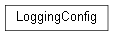
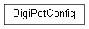
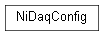
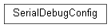
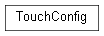
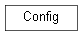

framework.util.config
Automated Software Verification Rig Configuration File Support.
Classes
LoggingConfig: NamedTuple representing the logging configuration.DigiPotConfig: NamedTuple representing the digipot configuration.NiDaqConfig: NaedTuple representing the nidaq configuration.SerialDebugConfig: NamedTuple representing the serial debug configuration.TouchConfig: NamedTuple representing the serial debug configuration.Config: Configuration File Support.
- class framework.util.config.LoggingConfig(level: int, levels: Dict[str, int], path: str, mode: str)
NamedTuple representing the logging configuration.
Inheritance
- level: int
Alias for field number 0
- levels: Dict[str, int]
Alias for field number 1
- mode: str
Alias for field number 3
- path: str
Alias for field number 2
- class framework.util.config.DigiPotConfig(ftdi_url: str, freq: float)
NamedTuple representing the digipot configuration.
Inheritance
- freq: float
Alias for field number 1
- ftdi_url: str
Alias for field number 0
- class framework.util.config.NiDaqConfig(device: str, signal_channel: str, encoder_lines: str, di_lines: str, do_lines: str, timing_counter: str, timing_source: str)
NaedTuple representing the nidaq configuration.
Inheritance
- device: str
Alias for field number 0
- di_lines: str
Alias for field number 3
- do_lines: str
Alias for field number 4
- encoder_lines: str
Alias for field number 2
- signal_channel: str
Alias for field number 1
- timing_counter: str
Alias for field number 5
- timing_source: str
Alias for field number 6
- class framework.util.config.SerialDebugConfig(path: str, ports: Dict[str, str], baudrate: int, mode: str, bufsize: int, timeout: float)
NamedTuple representing the serial debug configuration.
Inheritance
- baudrate: int
Alias for field number 2
- bufsize: int
Alias for field number 4
- mode: str
Alias for field number 3
- path: str
Alias for field number 0
- ports: Dict[str, str]
Alias for field number 1
- timeout: float
Alias for field number 5
- class framework.util.config.TouchConfig(aa_port: int, aa_addr: int, aa_timeout_ms: int, touch_request: array.array, touch_response: array.array)
NamedTuple representing the serial debug configuration.
Inheritance
- aa_addr: int
Alias for field number 1
- aa_port: int
Alias for field number 0
- aa_timeout_ms: int
Alias for field number 2
- touch_request: array.array
Alias for field number 3
- touch_response: array.array
Alias for field number 4
- class framework.util.config.Config
Configuration File Support.
This class implements a YAML based configuration file.
Inheritance
- get_digipot_config() framework.util.config.DigiPotConfig
Get the digipot module configuration.
- get_logging_config() framework.util.config.LoggingConfig
Get the logging environment configuration.
- get_nidaq_config() framework.util.config.NiDaqConfig
Get the nidaq module configuration.
- get_serial_debug_config() framework.util.config.SerialDebugConfig
Get the serial debug module configuration.
- get_test_yaml()
Gets the raw YAML representation of the test configuration.
- get_touch_config() framework.util.config.TouchConfig
Gets the touch module configuration.